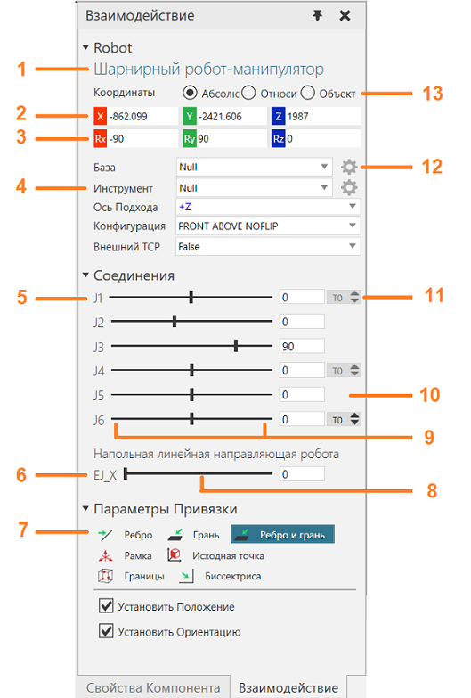
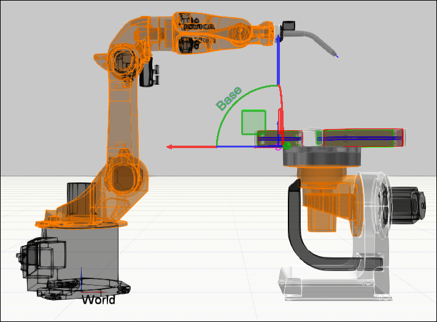
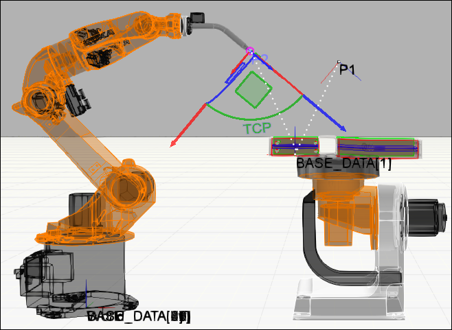
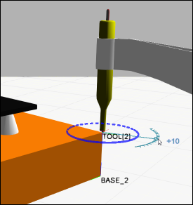
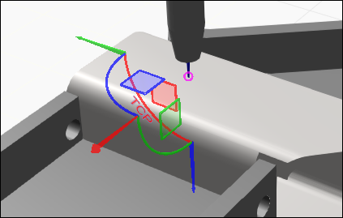
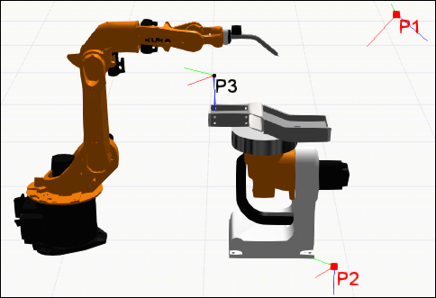

Панель Взаимодействие используется с командой Взаимодействие, чтобы вы могли манипулировать, настраивать и программировать робота в трехмерном мире.

1. |
Наименование робота |
2. |
Значения положения TCP (X,Y,Z) |
3. |
Ориентация TCP (Rx, Ry, Rz) |
4. |
Выбор Базы, Инструмента, Оси подхода инструмента, Конфигурации, Внешнего TCP робота. |
5. |
Текущее положение звеньев робота. |
6. |
Текущее положение внешней оси робота (Позиционер робота, позиционер заготовки). |
7. |
Параметры привязки TCP робота. |
8. |
Ползунок для изменения положения внешней оси. |
9. |
Минимальное и максимальное положение для звена. |
10. |
Отображение текущего положения звена. Доступно для редактирования. |
11. |
Отображение текущего оборота, если звено способно вращаться более чем на 1 оборот. |
12. |
Кнопка для перехода в панель настроек для базы или инструмента. |
13. |
Выбор точки отсчета для системы координат. |
Манипулятор
Манипулятор робота позволяет перемещать робота и обучать положениям с помощью базы и рамок инструментов. Базовая рамка действует как фиксированная точка в пространстве для упрощения работы с положениями робота. Как правило, базовые рамки расположены в системе координат мира роботов и находятся либо внизу, либо в корпусе робота. В некоторых случаях базовые рамки могут быть присоединены к узлам других компонентов. Например, базовые рамки могут быть прикреплены к поддонам, заготовкам и узлам во внешнем кинематическом компоненте, подключенном к роботу.

Рамка инструмента служит в качестве центральной точки инструмента (TCP) и для обучения позициям робота. Как правило, инструментальные рамки располагаются в узле фланца/на монтажной пластине робота или в центральной точке и наконечнике установленного инструмента. В большинстве случаев инструментальная рамка используется как начало координат манипулятора, который затем можно использовать для перемещения робота и инструментальной рамки в трехмерном мире. Большие стрелки манипулятора будут ссылаться на активную систему координат на панели Взаимодействие, а меньшие стрелки - на систему координат инструмента.

Одним из методов обучения позиции является обращение к базовой системе координат и вычисление расстояния до активной рамки инструмента и ее ориентации. В таких случаях манипулятор перемещает робота и активную рамку инструмента в эту позицию. Базовая рамка является родительской для этой позиции, поэтому перемещение базовой рамки в свою очередь приведет к перемещению этой и любой другой позиции, привязанной к ней. Если выбрать позицию робота в 3D-мире или на панели редактора программ, робот привяжется к этой позиции.
Подсказка: Используйте команду Заблокировать положения - К миру, чтобы позиции робота не перемещались в 3D-мире при изменении местоположения робота, базовой рамы или любого другого объекта, на который ссылаются эти позиции. Используйте команду Выделить, чтобы выбрать позицию робота и не привязывать к ней положение робота.
В некоторых случаях рамку инструмента можно прикрепить к узлам других компонентов и использовать в качестве внешнего TCP. Например, можно прикрепить инструментальную рамку к неподвижному инструменту, таким образом, робот будет ориентироваться вокруг фиксированной точки в пространстве. В некоторых случаях роли базовой и инструментальной рамок меняются местами, так что инструментальная рамка используется в качестве БАЗЫ, а базовая рамка - в качестве TCP. В результате позиция робота наследует ориентацию базовой рамки.

При привязке манипулятора свойство Ось подхода робота определяет, как ориентировать робота на основе ориентации активной рамки инструмента. Например, обычная ориентация рамки инструмента направлена вниз вдоль ее положительного направления оси Z.

Как правило, вы меняете ось приближения робота, чтобы получить другие результаты.

При попытке переместить манипулятор в точку, недоступную для робота, в 3D-мире будет отображаться ошибка, указывающая на исходную точку манипулятора.

Точно так же недоступная позиция робота в 3D-мире будет выделена красным цветом.
